Session 1 - What is GIS?
16 Nov 2021Introduction to GIS · Sciences Po Urban School, GETEC Masters · Fall semester 2021-2022
Lecturer: Raphaëlle Roffo
I. Session 1 Overview
Download the slides
- Course overview and objectives
- GIS as a field of research and a tool
- Why is spatial special?
- Issues with 2D representations of the Earth surface: Coordinate Reference Systems and Projections
- Common use cases
- GIS and geospatial data science workflows
II. Tutorial
Goals:
- Installing QGIS
- Exploring the QGIS console (or GUI, for Graphical User Interface)
III. Downloading QGIS
Visit https://qgis.org/en/site/forusers/download.html
Download the long-term release (most stable) version for your OS. This is a stable and relatively bug-free version as opposed to the latest release in which new features were introduced but you may find some bugs.
MacOS:

You may get an error message as the app was not downloaded through the AppStore. You can override the security settings by following this method. If you own an old Mac, you may need to download an older version of QGIS. If you are unable to download 3.16, try downloading one of the 2.18 releases from this page
Windows users: download the QGIS Standalone installer, you won’t need the OSGeo4W setup for your usage.
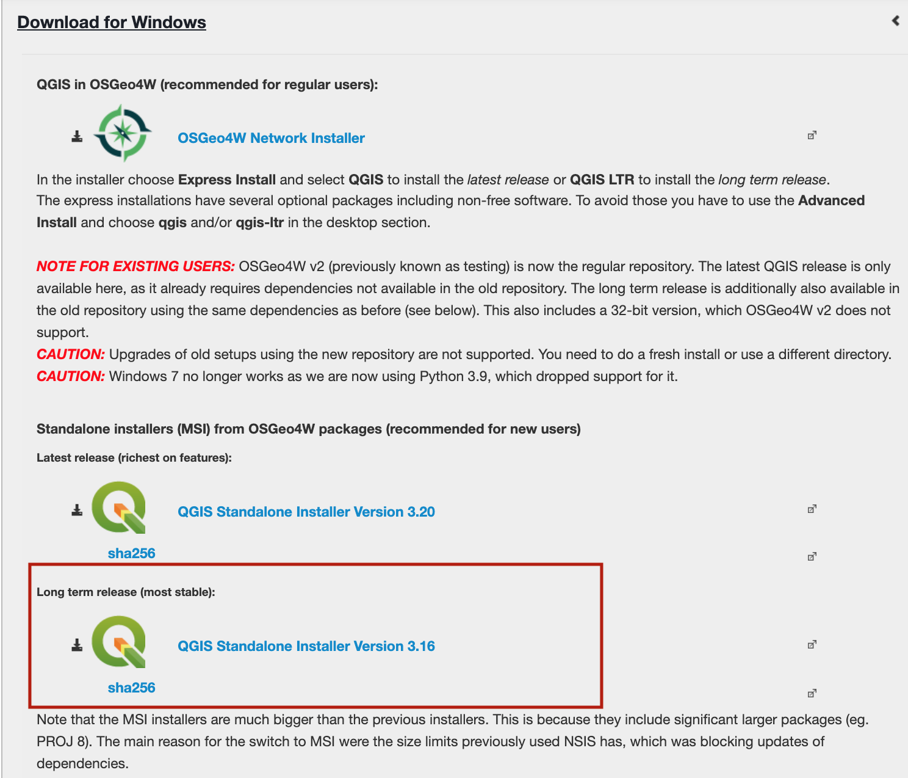
Once the installer is downloaded and launched, you can follow the steps and use the default options offered in each step. You’re then ready to start mapping!

IV The QGIS GUI
Let’s explore the QGIS Graphical User Interface (GUI).

1. Opening a new project
To launch a new project from scratch, you can click “new empty project” or the white page icon in the toolbar. You may also click Project > New in the top left menu dropdown.
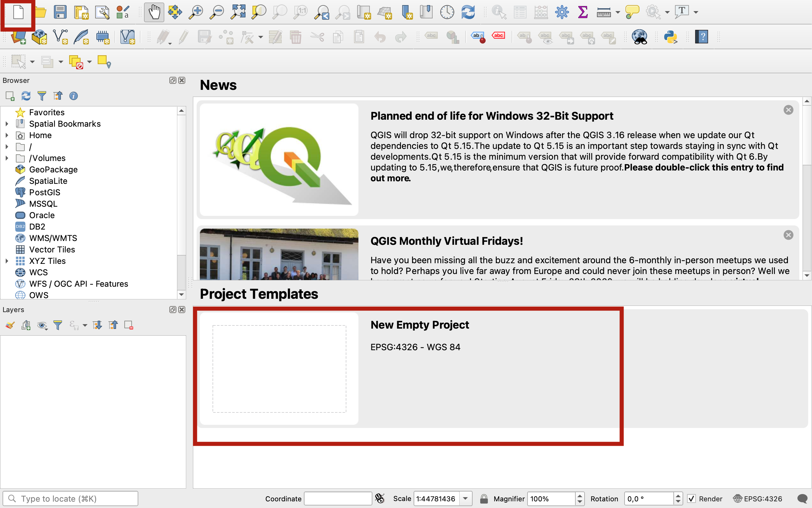
2. The map canvas
This is where your maps are displayed (in 2D). You can interact with it using the Map Navigation toolbar. You can pan across using the hand, zoom in and out using the magnifier glass, etc. We will get back to this next session when we start loading data into the project.
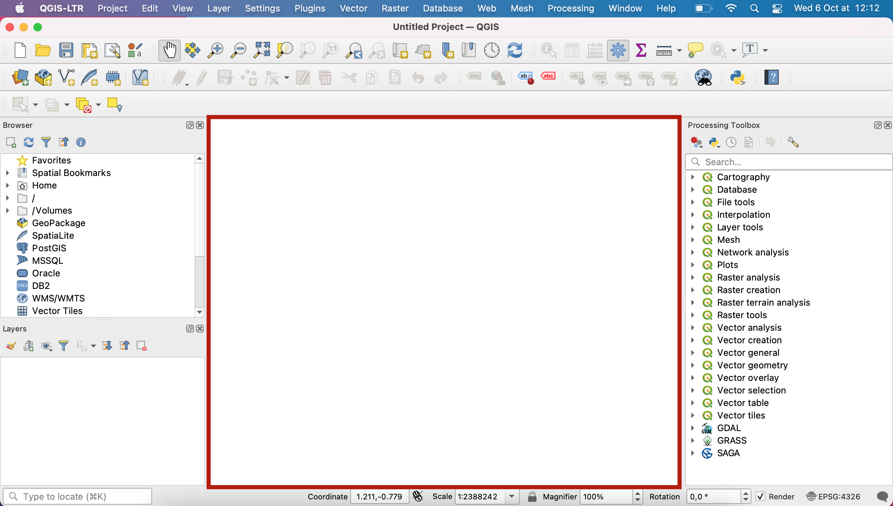
3. The menu bar
This is the top layer of your interface, and it contains various dropdown menus:
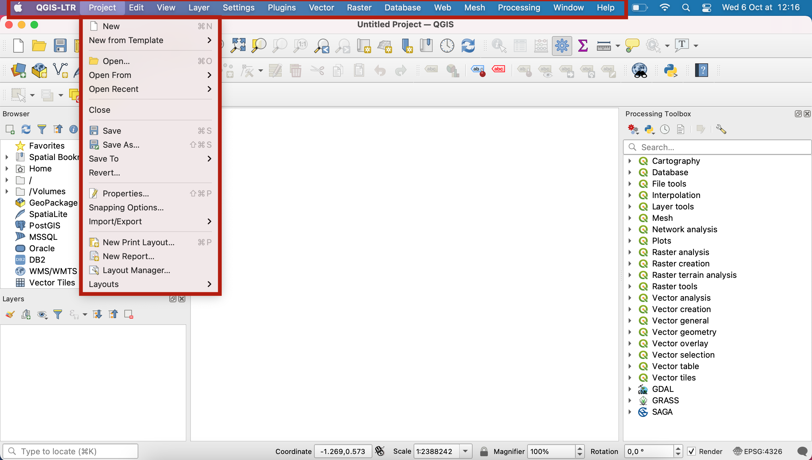
- The
Projectmenu allows you to access project files and export them, with tools to open an existing file, create a new one, close a project, save a project to various formats, export the map canvas as an image export with theprint layouttools, etc. - The
Editmenu allows you to edit a layer’s attributes or geometry, as well as to select features from a layer. - The
Viewmenu is a very rich menu. Most importantly, this is where you can toggle on and off the various toolbars and panels that are visible in your interface (more on this in the next section). It also allows you to create new map views next to the main map canvas, to interact with the map canvas (zoom, pan, etc), to get access to theMeasuretools andStatistical Summary, to preview your map as seen by a colourblind person or as printed in B&W, to show or hide layers, and more. - The
Layermenu allows you to interact with data sources (layers). You will mostly use it to load layers onto your map canvas. - The
Settingsmenu: you should not need to use user profiles or any of the options in this menu. - The
Pluginsmenu: it contains theManage and Install Plugins…tool, which is basically a library in which you can pick new plugins you can add to QGIS. Those are open source tools that developers are sharing with the community. ThePython consoleallows you to interact with QGIS using Python script. We will use it once this semester, to load basemaps! - The
Vectormenu contains tools for dealing with vector data: geoprocessing tools, geometry tools, but also analysis, data management and research tools. - The
Rastermenu contains tools for dealing with raster data. You will mostly use the raster calculator, conversion tools and analysis tools. - The
Processingmenu contains shortcuts to the Processing toolbox, your processing history and other functions you won’t need. - The
Helpmenu links to the official QGIS documentation
Other menus may be present if you have downloaded or enabled additional plugins (Mesh, Web, Database), but you won’t need them for this course.
4. The toolbars
Toolbars are located below the menu bar.
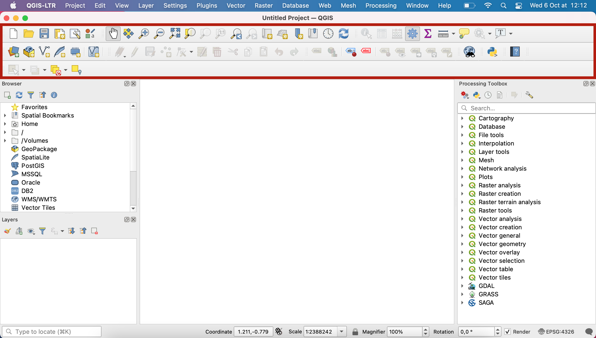
They can be moved by clicking the grey dots to the left, and you can rearrange them in the order you find best for your workflows. You can also unpin any toolbar out of the toolbar area, by clicking the grey dots and dragging it out of the top area; I would however advise against this as you might lose track of where your toolbars went.
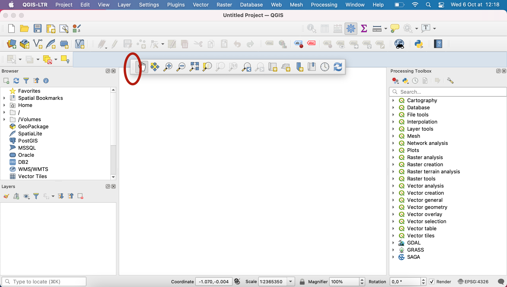
Very importantly, you can toggle each of the toolbar on and off by going into your menu View > Toolbars and ticking or unticking the toolbars you want to show or hide.
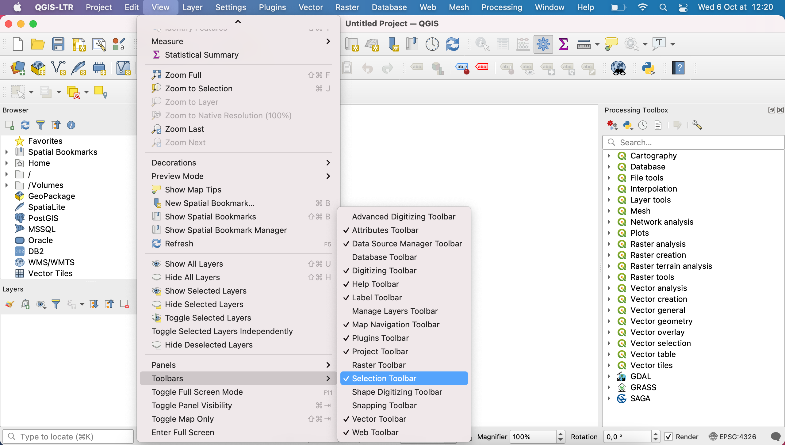
5. The panels
The panels are located to the sides of the map canvas (left and right).
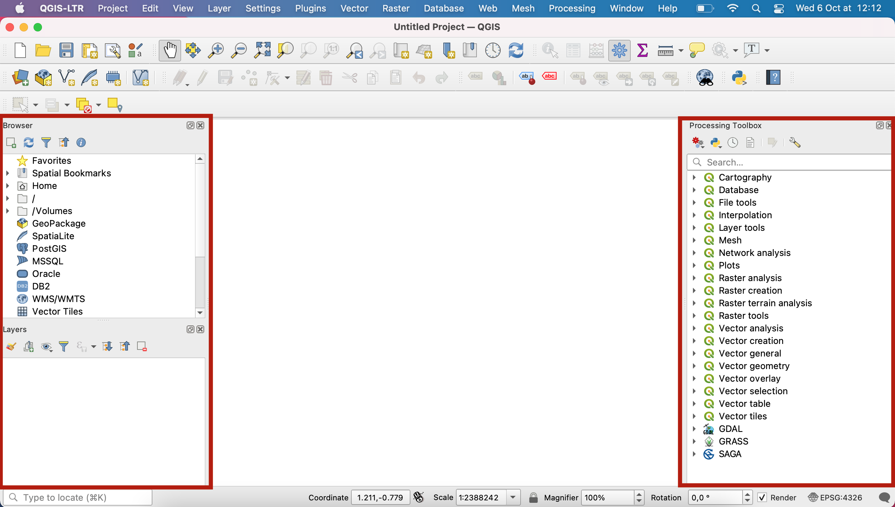
Similarly to the toolbars, you can toggle each of the panels on and off by going into your menu View > Panels and ticking or unticking the toolbars you want to show or hide.
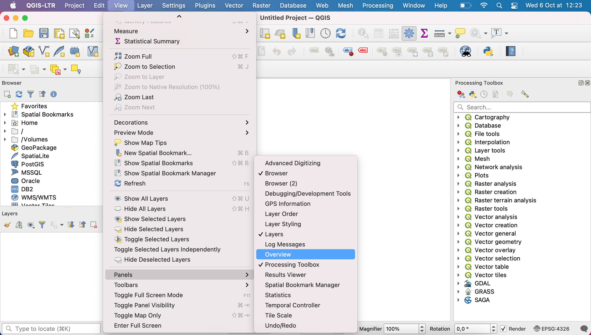
They can be rearranged by dragging the top of a panel and moving it. This may lead to the panel being unpinned from the side and just floating on top of your interface. To pin back to either side, it depends on which version of QGIS you’re working with and which OS. You can try dragging it back into its place until it becomes blue and snaps back, or double clicking the title of that panel.
Sometimes when you snap a panel back where a panel already exists, it will create two tabs. You can click a tab and drag it to reposition it where you want.
There are three very important panels you need to know about:
Browser: This panel allows you to navigate in your computer’s file system, and in particular to load data onto your map canvas by simply dragging & dropping it. More info on the official documentation
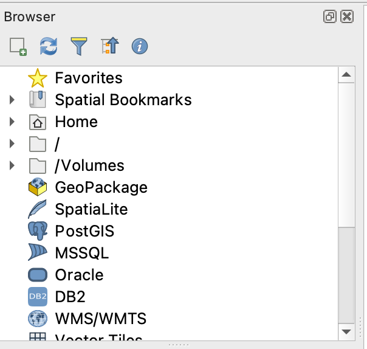
Layers: This panel displays a list of the layers that are loaded onto your map canvas. From there, you can show to hide any given layer, you can edit the order in which they are layered, and you can access a layer’s properties window.
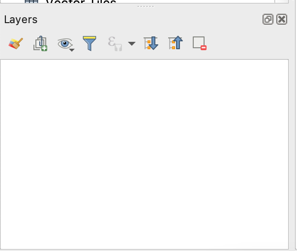
Processing toolbox: The processing toolbox contains all of QGIS algorithms, and a search bar for you to access them.
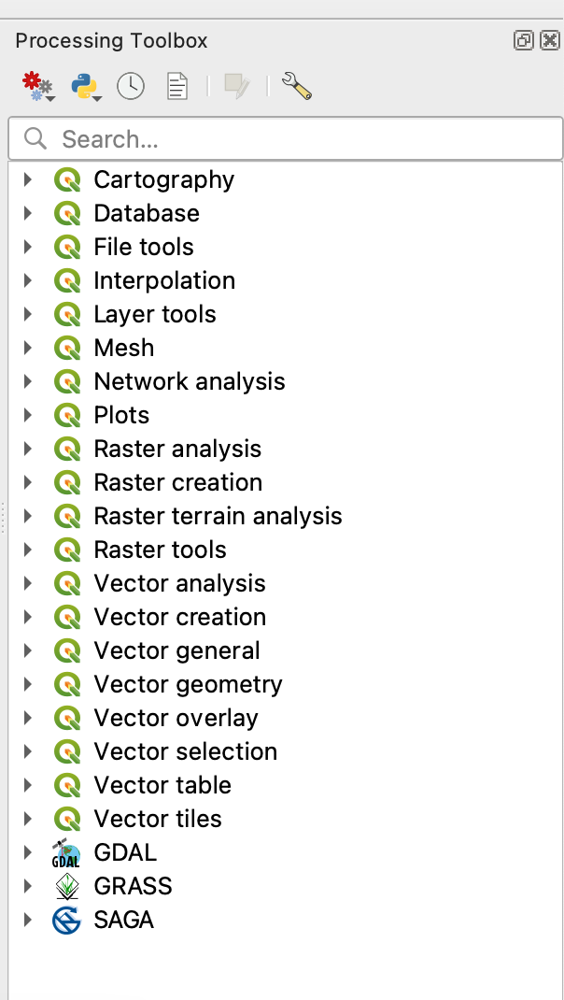
6. The status bar
The status bar contains general information about the map view: the zoom level, the coordinates of where you mouse is, the EPSG of the coordinate reference system your map canvas is set to.
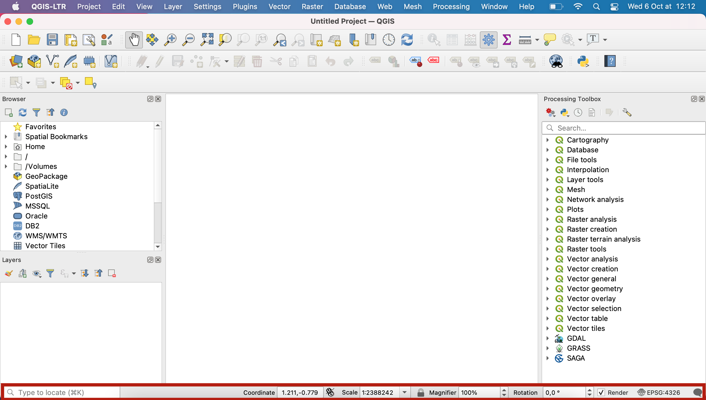
V. Documentation
The QGIS documentation is available at this address: https://qgis.org/en/docs/index.html
Please note:
-
This course is taught in English but some of you will have a version of QGIS installed that’s in a different language. You can overwrite the language of your OS to use QGIS in English by going into
Preferences>Options>General>Override system localeand selectEnglish.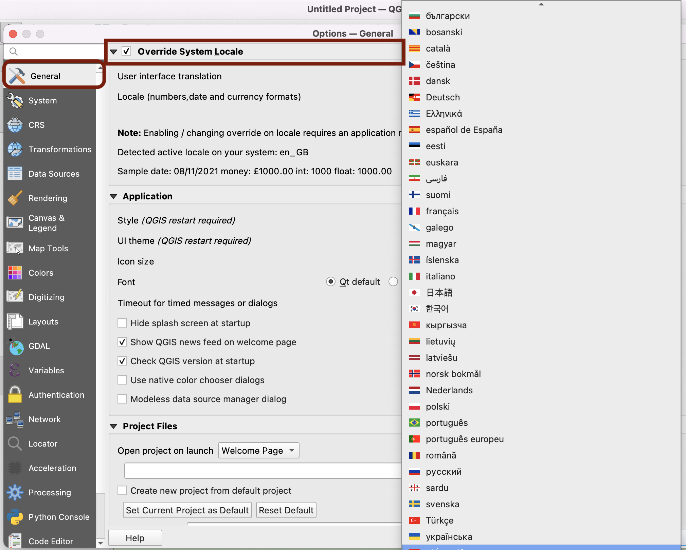
-
If you are trying to understand how a function translates into that language, at any time when navigating the documentation you can change the language of the page directly in the url (by replacing
/en/by/fr/for French, or/es/for Spanish,/zh-Hans/for Mandarin Chinese etc.): For instance to go from English: https://docs.qgis.org/3.16/en/docs/user_manual/introduction/qgis_gui.html to French: https://docs.qgis.org/3.16/fr/docs/user_manual/introduction/qgis_gui.html
- Similarly, you might have a version installed that is not 3.16 ; you can also edit the version directly in the URL to match the release you’re using, by changing
/3.16/. For instance from QGIS version 3.16 https://docs.qgis.org/3.16/en/docs/user_manual/introduction/qgis_gui.html to QGIS version 2.18 https://docs.qgis.org/2.18/en/docs/user_manual/introduction/qgis_gui.html